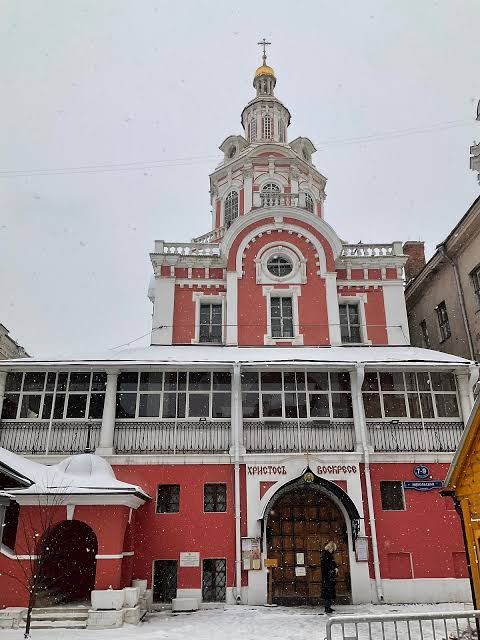
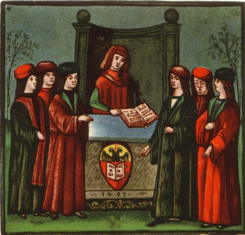

Заголовок
nndfgnfd
Заголовок
nndfgnfd
История высшего образования в Европе

История высшего образования в Старом Свете (то есть в Европе) берет свое начало еще в
1088 году. Интересно то, что первые
здания учебного заведения все же известны лишь с XIV века. Но, так
или
иначе,
именно Болонский университет является первым в
Европе, и после чего начали появляться другие, в том
числе:
- Оксфордский университет (основан в 1096 году).
- Парижский университет (основан в 1208 году).
- Неапольский университет (основан в 1224 году).
- Венский университет (основан в 1365 году) и прочие.
Высшее образование в последующих веках развивалось все такими же бурными темпами, а также перемещалось из
Европы
и
на
другие
материки, например в Америку.
Когда началась история высшего образования в России
В отличие от Европы, история высшего образования на территории Московского царства, а потом
Российской
империи началась аж в XVII веке. В 1687 году была основана Славяно-греко-латинская
академия, которая
и открыла ворота к высшему образованию в России.
Она была открыта благодаря
стараниям Симеона Полоцкого и в ней могли учиться представители не только
привилегированного
сословия (знать, бояре, дворяне), но и других сословий государства
Российского.
Однако эту академию нельзя считать полноценным Высшим учебным заведением. Первые ВУЗы в
России появились
лишь в начале XVIII века, в том числе во времена знаменитых Петровских реформ.
В XIX веке высшее образование в Российской империи продолжало развиваться, открывались новые
ВУЗы
(Казанский
и
Харьковский в 1804, а также многие другие), развивались науки и появлялись
новые ученые.